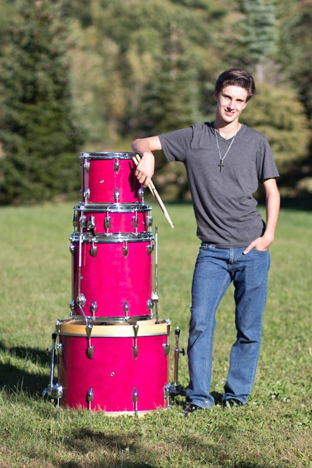

When I was around 15 years old, I started playing drums. I first became interested in music at a fairly young age. I remember as a kid my Mom listening to a lot of pop music, such as Spice Girls, Shania Twain, Britney Spears, Backstreet Boys and pretty much everything that was on the radio in the late 90's. My Dad, however, was a fan of much harder music that was commercially successful. When with my Dad in the car, my brothers and I would listen to bands like Godsmack, Def Leopard, Bon Jovi, Judas Preist, Ozzy Osbourne, and even Iron Maiden.
Between the two I definitely navigated towards my Dad's music. Something about the screaming guitars, the deep tone of the drums, and the feeling of the bass had me hooked. Though I had tried guitar before, I was convinced that I didn't have a musical bone in my body.
Because my Mom was the prophetic leader at our church, our entire family sat in the front row at church. Being a 15 year-old, one of the last things I wanted to do was sit in the front row of church. So I did as most young men that age would do, stood there, hands in pockets and zoned out for the most part. One thing that I did without noticing was keep time with the band. Soon the lead guitarist noticed that I was consistently keeping up with the band and decided to take action. He walked up to me one day after service and asked me if I had played any instruments before. I told him that I had played guitar a few times before, but never really picked it up before. He asked if I'd be willing to try a different instrument. I agreed and he recommended drums. I said, "Sure, why not?"
And the rest is history...
Back to Home.